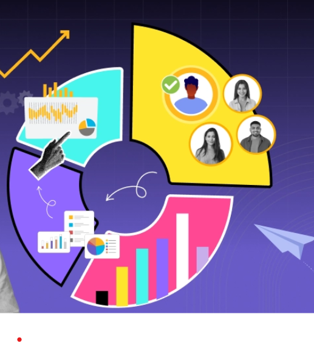

01
Programming & Development
Writing structured code and creating interactive applications.
HELLO, WORLD! I'M
I turn ideas into useful software — from Python applications and database-driven tools to data-driven experiments. I also enjoy making programming easier to learn through practical, hands-on teaching.
*As stated in internship experience. Replace or remove any detail you no longer wish to feature.
01 / A LITTLE ABOUT ME
I'm Samiran Patra — a Computer Science student, Python Developer, Software Developer, and Python Trainer. I have a strong passion for learning new technologies, solving real-world problems, and sharing my knowledge with others.
My Computer Science Journey My Computer Science journey began during the first year of my diploma. At that time, I started learning Frontend Web Development, including HTML, CSS, and JavaScript, independently with the help of the Apna College YouTube channel. During my second year, I realized that strong programming knowledge was essential to becoming a skilled Computer Science professional. This realization marked the beginning of my Python learning journey. By staying up late in the hostel and practising consistently, I developed my knowledge of Python Programming and Data Structures & Algorithms (DSA). Later, I completed an internship related to Python and DSA at Ardent Computech Pvt. Ltd. Alongside this, I started learning Web Development using the Django framework and Database Management using SQL. During my third year of diploma studies, despite a busy academic schedule, I focused on learning Artificial Intelligence, Machine Learning, and Data Analytics using Python. My internship at Dreamz Vision was an important milestone in my learning journey. I also earned a Frontend Web Development certificate from Ardent Computech Pvt. Ltd. After completing my diploma, I began applying my knowledge in professional settings. Through my association with The Soft Crafts, I gained practical experience in Digital Solutions, Marketing, and E-commerce Operations. I also had the opportunity to work as a Python Trainer at Dreamz Vision, where I taught programming to students. These experiences helped me strengthen not only my technical skills but also my communication and teaching abilities.
Currently, I am pursuing the second year of my B.Tech in Computer Science at Seacom Skills University, Bolpur. Alongside my academic studies, I continue to improve my technical skills, develop projects, and gain professional experience.
◎* B.Tech in Computer Science — Seacom Skills University, Bolpur (Currently Pursuing)
◎ Diploma in Computer Software Technology — Sheikhpara Abdur Rahaman Memorial Polytechnic (Completed in 2026)
◎ Higher Secondary Education (Science) — 2023
◎ Secondary Education — 2021
◎ Python Trainer — Dreamz Vision
◎ Startup & Digital Solutions Experience — The Soft Crafts
◎ Python & Data Structures and Algorithms Internship — Ardent Computech Pvt. Ltd.
◎ Artificial Intelligence, Machine Learning & Data Analytics Internship — Dreamz Vision
◎ Frontend Web Development Certification — Ardent Computech Pvt. Ltd..
I believe that consistent practice, hard work, and a passion for learning are the keys to becoming a skilled technology professional. My journey is still ongoing, and I am committed to continuous learning and improvement. My primary goal is to establish myself as a skilled Software Engineer, develop effective solutions to real-world problems, and create innovative solutions through technology.
Great software starts with curiosity, grows through practice, and improves with feedback.
Learn • Build • Innovate
02 / MY TOOLKIT
A growing toolkit for building software, understanding data, and solving programming problems.
Writing structured code and creating interactive applications.
Tools for data work, visualization, computer vision and interactive projects.
Core concepts for logical thinking and efficient problem-solving.
Exploring analytical workflows and introductory machine learning.

05Tools used for development, collaboration and documentation.
ALWAYS LEARNING
I keep learning by building projects, practicing coding challenges, and exploring new tools.
See what I build ↗03 / SELECTED WORK
A selection of projects and learning experiments. Open each project to explore its details, source code, or demo when links are added.
Project cards are driven by js/projects.js. Add your own project URLs, screenshots, GitHub repositories, and status there.
04 / INTERNSHIP
Dreamz Vision
Apna College & Ardent Computech Pvt. Ltd.
Ardent Computech Pvt. Ltd.
Certificate links are placeholders until you add your real certificate files. Confirm the exact provider names and dates before publishing.
04 / EXPERIENCE
The Soft Crafts · Startup
Dreams Vision Finishing · Professional Training & Programming Education
Professional experience showcasing programming education, technical operations, e-commerce, client coordination, and software development.
05 / EDUCATION
Sheikhpara Abdur Rahaman Memorial Polytechnic
Keshrambha Vidyasagar Vidyabhaban
Keshrambha Vidyasagar Vidyabhaban
06 / CERTIFICATES & TRAINING
Add scanned certificates or PDFs to the certificate folder and update the links below.
07 / BEYOND THE SCREEN
Communication, teamwork, analytical thinking, problem-solving, time management, adaptability, quick learning, teaching and mentoring.
Bengali — Native
English — Working proficiency
Hindi — Working proficiency
Software development, coding challenges, algorithms, technical mentoring, Artificial Intelligence, Data Science and outdoor sports.
08 / LET'S CONNECT
I'm interested in Python and software development opportunities, learning collaborations, and projects involving data and technology. Send me a message and let's start a conversation.